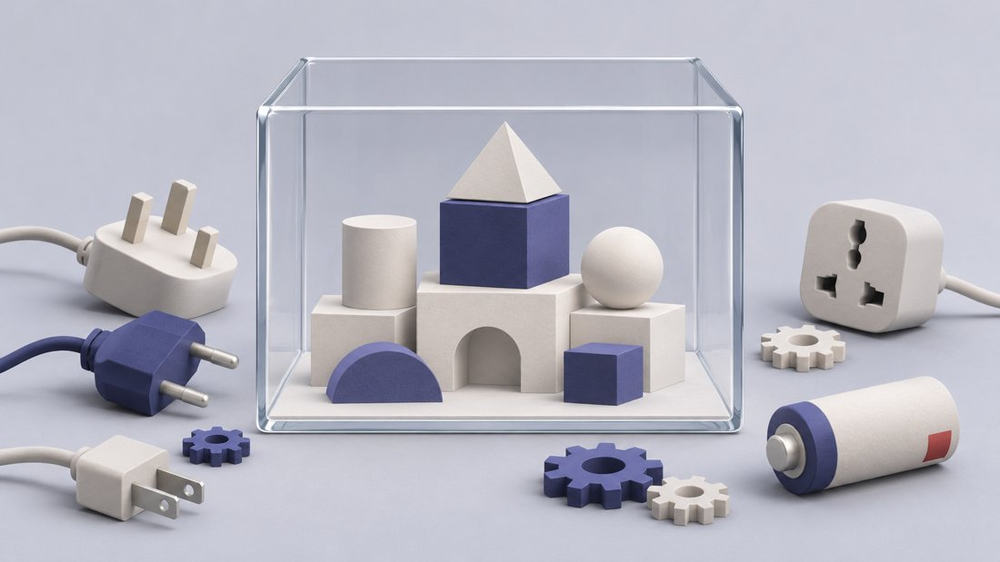
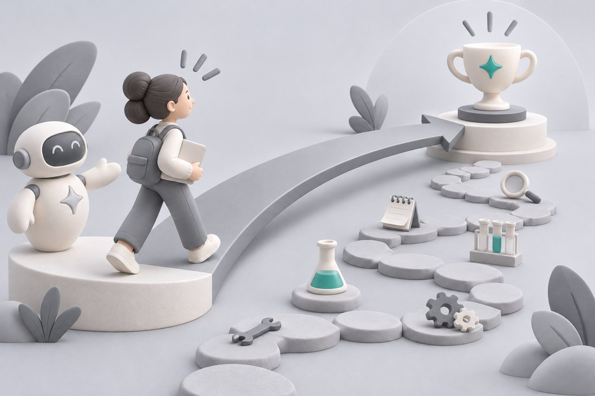

01
过程
Process & Evidence
P1–10
材料与边界两张画像双坐标与四张时序图
先看我们是怎么看到的
![]()
![]()
![]()
![]()
![]()
![]()
![]()
![]()
工具档位、权限授权与环境门槛——在任务还没开始前，条件已决定大半走向。
把模糊需求写成 AI 接得住的任务规格，省下敲键盘的时间又还给了“讲清楚”和“验收”。
王伟："对于新手来说，只能许愿式编程……遇到无法解决的问题，得去问大佬，问完之后自己像个路由器，再把大佬的话转给 AI。"
徐立桂："熟练工预先知道一些容易出 bug 的地方，写 prompt 时就会说是不是这个问题；新手不具备这样的知识，只能让 AI 自己去查。"
王伟："AI 非常喜欢做一些无效封装，定义各种变量传来传去……很难跟 AI 说清楚 code review 到底是什么，基本上还是得自己看，看完再告诉他不用做那么多封装。"
梁淼城："上一轮生成的已经开始跑偏了，我会给他引导，说把上一轮的全部回滚，然后重新来一遍。"
多任务状态不可见、上下文随对话丢失，人靠 6 类异常信号喊停会“自信地错”的 AI。
王鹤锦："压缩过的对话会丢失记忆，clear 后也会丢失。"
于是靠 /btw 提问、按 Esc 回到任务郑雨豪："会话是按工作目录做的，切换到其他目录，上一个会话就丢掉了。"
于是跨任务时手动翻、手动搬彭椒："OpenCode 里觉得有用的内容，会手动保存在别的地方（VS Code）。"
于是每个工具一套记忆郑雨豪："他做的是错的，但他认为他是对的。"
徐立桂："生成 slop，把所有事情弄得很复杂，但是非常规范。"
王鹤锦："乱编函数名……一问他就检索，就又改过来了。"
王伟："精度调不通，就开始左右脑互搏。"
验证只认离执行最近的运行证据，但当代码读者从人变成 AI，人与人之间的理解锚点开始松动。
6 / 6 首选；"我们都是通过现有工具去做验证，这个地方是没法作假的"（王伟）
视责任与规模：王伟通读并清理；郑雨豪只核公式；"几千行、可读性差，不一定能看过来"（郑雨豪）
分化最大：郑雨豪"没有中间数据就认为它是编造的"；王伟"没那闲工夫"；徐立桂"越干净越好，按需点开"
任务卡死后人先归因于自己；几乎没人自己接手写完，而是换更强模型或拆细再交回 AI。
"一开始我想一键生成一个 agent 框架，AI 显然搞不下去，那就只能一步步拆解任务……拆得越细，AI 执行越符合预期，因为他不用猜了。"——他不是自己写完，而是把大任务拆成 AI 接得住的小步骤。
梁淼城："AI 做错的时候，我肯定也做不对。"郑雨豪："不太能自己继续，大不了再买一个新账号，自费上班。"王鹤锦："一般不自己上手，就是找问题、纠正他。"
错误样例稀缺、官方流程过重；学习挤在 AI 干活的等待窗口里，“学会”的标准也已分裂。
偏好与实际行为错位、工具迁移成本近乎为零、同一行为因情境而异，团队整体理解正在变薄。
这一层几乎全是硬问题（5 问题 + 1 资源现象）：不是模型不够聪明，而是工程外壳缺了状态管理、诚实信号与环境适配。
6/6 受访者手动维护上下文，切换任务后难追进度，因为工具仍把线性聊天记录当作工作记忆。
“压缩过的对话会丢失记忆，clear 后也会丢失。”王鹤锦 · P21
受访者遇到 AI 自信出错、追问也难确认的情况，因为生成结果缺少编译、单测和结果对比等外部校验。
“他做的是错的，但他认为他是对的。”郑雨豪 · P23
算力、网络与依赖卡住开工，Skill 又常绑着完整流程，因为工具默认资源充足，没把可复用知识从流程中拆出来。

“我一般不太会用他的工作流，一般让他看里面的一些知识。”王伟 · P33
正因为 L1 不可观测、会失忆、会自信地错，开发者不敢放手，被迫在 L2 投入大量精力做人工上下文装配与逐轮盯盘。
看 L2 协作层 →L1 属于可直接用工程补齐的硬缺口：远端可观测、上下文持久化导出、Skill 步骤可裁剪与 token 预算可见。
见生态侧 · Skill 与 CLI →这是问题与现象最密集的夹心层：AI 改变了代码的生产速度与读者对象，但研发协作协议仍停留在手写时代。
AI 生成提速后，详设与评审仍占去约 85% 工时，因为旧协作方式仍按“写得慢、读得快”设计。
“基本上还是得自己看，看完再告诉他不用做那么多封装。”王伟 · P18
AI 跑偏后，5/6 受访者会换模型，权限也在全放手与紧盯之间摇摆，因为工具缺少可回滚检查点和异常信号汇总。
“点开他的 thought……发现那些尝试完全都不对，就让他终止。”王伟 · P22
用户更信执行现场的结果，静态文档难以指导排错，经验也留在本地，因为知识没有连到运行证据与反例。
“其实缺的就是错误样例，他不知道怎么错的。”梁淼城 · P32
当开发者长期陷入“写详设 + 盯盘 + 换模型”的防御性循环，真正的试错探索被压缩，引发深层的学习与组织后果。
看 L3 人的层 →L2 需要重建人机协作协议：上下文装配台、验证凭据链、交接信号面板与可恢复检查点。
见生态侧 · 文档与反例 →模型越强、一键跑通越顺滑，跳过试错的诱惑就越大——短期交付红利背后，正在积累长期的认知与组织债务。
学习挤进等待 AI 的碎片时间，“会用、能复现、亲手写”开始分化，因为 AI 代劳排错也折叠了试错过程。

“我想学 vLLM，就让 AI 写规划，代码我自己写。”王鹤锦 · P35
AI 出错时，开发者先怪自己没写清 prompt，因为工具藏起了能力边界，协作又让人感觉成败取决于表达。
“结果不好不一定是 AI 的问题，很可能是我 prompt 写得不好，或者技术路线选错。”王鹤锦 · P30
新人交付更快、产出更多，但团队对核心代码的理解变薄，因为只验收任务跑通，没有确认团队是否同步理解。
“AI 会了，我不会。”郑雨豪 · P40
L1 补工程、L2 建契约、L3 护认知——只有三层联动，才能既拿到 AI 提速红利，又不透支人的判断力与团队底盘。
回 P41 全景 →L3 需设计“可控的认知留痕”：把被压缩的试错变成可回放的最小实验，把老手的“形态信号”沉淀为可迁移检查项。
进入 04 设计 →详设模板、昇腾 API 上下文、排错沉淀直接读写本地 .md / git，换任何 IDE 或 CLI 零迁移代价。
不另建封闭式网页知识库或强绑登录态的私有空间——6 人中 4 人已用本地文件沉淀。
把官方 Skill 拆成可单独挂载的规则/反例知识包与可勾选裁剪的步骤，并提前展示 token 预算。
不把整套算子开发 SOP 焊死成黑盒大流程，强迫用户从头跑到尾、白烧商业模型额度。
把编译结果、golden 精度、msOpProf 指标与真实报错反例直接钉在结论旁，让验证成为默认态。
不堆砌冗长的“参考来源链接列表”占版面——来源默认折叠，仅在实测冲突时按需展开。
把 checkpoint 回滚、异常叫停信号与 1 分钟“决策/踩坑留痕卡”做成标准件，护住团队底层理解。
不赌模型一次写对，也不让“一键跑通”彻底吞噬工程师的试错直觉与架构心智。
人肉翻文档贴 API 链接、每次从零写详设；文档全教“怎么写对”，AI 一踩坑就编造接口。
每篇核心文档自带 AI-Ready 上下文包 + 高频反例卡，一键装配进本地 .md，开局即带护栏。
昇腾社区核心算子 / API 页面新增「AI 上下文视图（llms.txt / .md）」：剥离导航噪音，锁定 CANN 版本号、内存对齐约束与签名契约，并实时显示 token 体积。
针对“没人教怎么错”，沉淀高频踩坑三元组：典型错误写法 → 真实编译/运行报错特征 → 正确改法，直接喂给 AI 作负向约束，也给新人作最小反例教材。
提供结构化详设骨架（目标 / 边界 / 验收命令），一键勾选挂载昇腾 API 与反例包导出本地 spec.md，把 85% 准备工时压缩成可复用模板。
已勾选：[✓] API 契约 · [✓] 3 条高频反例 · [✓] golden 精度验收命令 → 导出至 ./.ascend/spec.md，可直接 @spec.md 启动任意工具。
官方 Skill 强绑全流程狂烧 token；开工常卡在卡位/版本/黄区；远端 NPU 任务黑盒无进度。
Skill 拆成轻知识包 + 可裁剪步骤；CLI 自带 ascend-doctor 预检与远端阶段进度流。
把官方 Skill 拆分为知识层（规范/反例/报错映射，几百 token 随取随用）与步骤层（支持按任务勾选跳过，前置展示预估 token 消耗与模型档位建议）。
把 AI 帮不上的算力卡位、CANN 版本、黄区代理、依赖路径做进 CLI 诊断命令，输出结构化 env.json 交给 AI，避免开工半小时全耗在环境报错上。
面向远端编译、golden 校验与 msOpProf 长任务，通过 CLI 暴露标准阶段进度条与结构化结果回传，让任何外部 Agent 都能接住远端状态。
多任务靠来回点甚至自建定时闹钟；压缩/切目录丢记忆；跑偏了只能翻历史、换模型重来。
任务状态坞 + 文件锁提示；Pin 约束 + /btw 旁路窗；Anti-Slop 嗅探 + 轮次快照回滚。
把只有“标题+时间”的死列表升级为实时看板（运行中 / 卡住等你确认 / 已完待验），直接标出多任务读写同一文件的冲突锁（解王伟、彭椒、梁淼城、郑雨豪并发痛点）。
① 详设/约束钉固防压缩丢失；② 原生 /btw 旁路小窗随时问报错（Esc 返回不污染主会话）；③ 有用结论一键摘录落回本地 .md，不再拉进度条翻历史。
后台监测 thought 重复兜圈或碎函数暴增并亮黄灯提醒；每轮绑定隐藏 Git 快照一键回滚（替代“换模型重来”）；底栏透明显示阶段路由（聊思路用轻模型、写码切旗舰）与真实额度。
tiling.h🔒 文件占用冲突检测到：连续 3 轮 thought 尝试同一报错（左右脑互搏），且新增 4 个 1–2 行碎封装函数。
同一会话自检不可信；几千行 diff 审不动（4 人点名要图解）；一键跑通后团队理解变薄。
干净上下文双窗审校 + 架构图解 Diff；绑定实测凭据链；自动沉淀 1 分钟复盘卡。
一键唤起隔离审校 Agent（不继承生成端思维惯性），面对大改动先生成模块调用与数据流变更图，再辅助按模块拆成小 PR（回应徐立桂双窗、王伟拆 PR、4 人要可视化图解）。
把编译告警、golden 误差、msOpProf 搬运占比结构化钉在审校面板旁；文档引用来源默认折叠收起，仅在实测结论冲突时按需展开（回应 P25/P27）。
任务验收或等待空档，自动提炼 1 张极简卡片（核心参数取舍 + 1 个 AI 踩坑记录）落回本地 .md，支持一键沉淀进昇腾反例库，守住团队底层直觉。
独立审校发现：tiling_helper.h 新增 3 层冗余模板封装；建议剔除后再合入。
• 参数取舍：tile_size=128 比 64 减少 35% 搬运，但需留意 UB 峰值。
• 踩坑记录：AI 初版未按 32B 对齐致 EZ9999，已附实测修复 diff。
生态侧出双态文档（.md）与高频反例卡、Skill 拆解标 token；工具/CLI 默认输出实测凭据链并折叠来源。
落地多任务状态坞与文件锁、Pin 约束 + /btw 旁路窗、Anti-Slop 嗅探回滚与 ascend-doctor 预检。
上线“一窗写一窗审”架构图解 Diff，打通 1 分钟复盘留痕反哺昇腾反例库的组织闭环。